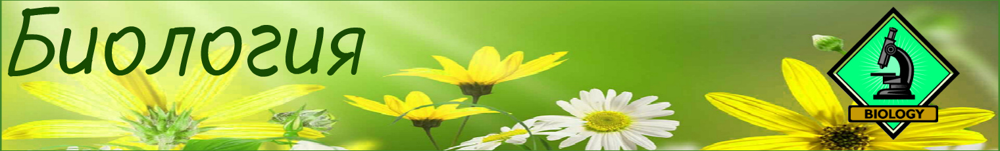
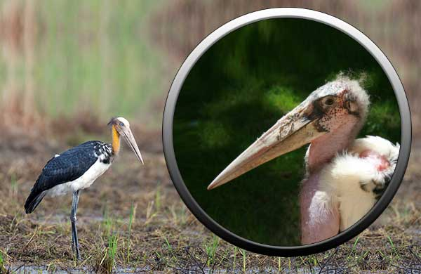

Главная
Животные
Животные паразиты
Животные падальщики
Растительноядные животные
Рыбы
Птицы
Растения
Человек
Вымершие
Растительноядные животные
Зеленые растения обладают способностью к фотосинтезу, при котором с помощью лучистой энергии солнца простые химические компоненты воздуха и вода превращаются в более сложные соединения. Таким образом, растения сами обеспечивают себя пищей. Животные этого делать не умеют.
Они обеспечивают себя энергией, поедая растения или питающихся растениями животных. Следовательно, без растений на земле просто не было бы жизни. Большинство животных - растительноядные. Часто они используют в пищу лишь определенные виды или даже части растений, которые лучше в подходят для их пищеварительной системы. Листья и стебли в основном состоят из довольно грубого вещества - клетчатки, или целлюлозы. Она с трудом поддается перевариванию, но микроскопические бактерии и простейшие, живущие в желудках многих растительноядных животных, помогают переварить размельченную растительную пищу.
Ламантины
Пираний называют кровожадными, поскольку считается, что они готовы нападать, не останавливаясь ни перед чем. При этом большинство их видов относительно невелики и питаются, как правило, мертвыми или слабыми животными, которых легко поймать. Пираньи встречаются в реках восточной и центральной части Южной Америки. У них крупная короткая голова с сильными челюстями и острыми, как бритва, заходящими друг на друга, словно лезвия ножниц, зубами. Пираньи живут стаями и прекрасно чуют запах крови. Чаще всего они едят рыб и мелких млекопитающих или выпавших из гнезд птенцов. Стаями они могут охотиться на детенышей кайманов, оставленных матерью.
Окапи

Марабу обитают на юге Африки. В основном эти аисты питаются падалью, но порой ловят насекомых, рыбу и мелких птиц. Они достаточно ловко умеют раззадорить других животных, питающихся падалью, и пока те ссорятся из-за добычи, сами быстро успевают пообедать. Часто их можно увидеть вблизи скотобоен. Длинный кожный мешок под их клювом никак не связан с приемом пищи. Он служит опознавательным знаком и играет определенную роль в брачной церемонии.
Даманы
Эти животные похожи на крупных грызунов, однако их ближайшими родственниками являются слоны. Благодаря мягким подошвам лап и сильно загнутым когтям они в одно мгновение могут залезть на дерево. Клейкое вещество, выделяемое специальными железами на лапах, помогает им крепко удерживаться на деревьях. Эти ночные, издающие громкие крики млекопитающие обитают в лесах Африки. Питаются они листьями, папоротниками, плодами, иногда насекомыми и яйцами птиц. Живут даманы, как правило, парами.